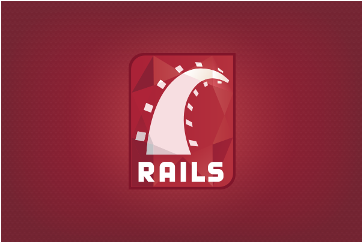

HOME
学習の目標
まずWebアプリケーションの特徴について解説します。
HTML/CSSの章で作成していたWebサイトでは訪問者は閲覧するだけでしたが、Webアプリケーションでは投稿や削除など様々な機能が使えます。
Ruby on Railsを用いると、Webアプリケーションを簡単に作ることができます。
Webアプリケーションとは
「Webアプリケーション」とはWebブラウザから利用するアプリケーションです。
現在ではみなさんの利用している多くのサイトがWebアプリケーションとして提供されています。
例えば、cookpad、Amazon、楽天、Airbnb、ZOZOTOWNなどです。
アプリケーションとはソフトウェアのことです。
WindowsやMacに入っている
・メモ帳
・Excel
・ペイント etc...
これらすべてがアプリケーションです。
つまり、Webアプリケーションとはインターネット（Webブラウザ）を介して使うソフトウェアのこととなります。インターネット環境がないと使えません。
Webサイトは公開されたコンテンツを単に訪問者が閲覧することしかできません。
それに対しWebアプリケーションは、訪問者が情報を検索や保存したり、投稿や編集することができるものとなります。
Ruby on Rails とは
Ruby on Railsは、Rubyでのプログラミング開発を効率的にするための「フレームワーク」です。

フレームワークは、アプリケーション開発をする為の枠組みのようなものです。
開発を効率的にするための便利な機能がたくさん詰まっています。
開発者は、フレームワークのルールに則ればプログラムを1行1行書くよりも、早くWebアプリケーションを開発することができます。
他にも様々なフレームワークが存在していますが、Rubyでは現在、Ruby on Railsを利用した開発が主流です。
Ruby on Railsには主に3つの特徴があります。
生産性の向上
基本的な構造がすでに出来ているため、無駄なプログラミングが必要ありません。
そのため、フレームワークを使用するのとしないのでは書くコードの量が違います。
より少なく書けることで素早く機能を開発することが出来ます。
メンテナンス性
フレームワークにはそれぞれルールがあります。
作業者はルールに従ってコードを書くため、コードの一貫性が維持しやすく、不具合や仕様変更があった際、どこに問題があるのか、特定がしやすくなります。
さらに、Railsの設計思想として「CoC（設定より規約）」という概念があります。
規約に従うことで誰が書いても似たようなコードが書けるようになり、メンテナンスしやすくなります。
品質の維持
Railsはオープンソースです。
オープンソースとは無料でソースコードが公開されており、誰でも閲覧や編集できる状況にあることを指します。
世界中の多くの人の手により利用実績が積み上げられ、何万もの改善が今も行われています。
Ruby on Railsの設計理念
DRY（Don’t Repeat Yourself）
和訳すると「同じ記述を繰り返さない」となります。
あらゆる情報について、様々な個所に複数記述するのではなく、1か所に記述します。
それにより、変更が生じた際に何か所もコードを修正することがなくなります。
CoC（Convention over Configuration）
和訳すると「設定より規約」となります。
従来のフレームワークのように設定を大量に記述するのではなく、規約にのっとってプログラミングすることで、余計なプログラミングや設定を省くことができます。
例えば、社員クラス名を「Employee」、社員情報データベース名を複数形の「employees」とします。
この規約に則ることで、EmployeeクラスとemployeesテーブルのマッピングはRailsで自動で行うので、開発者はクラスとテーブルを関連付ける設定を記述する必要はありません。